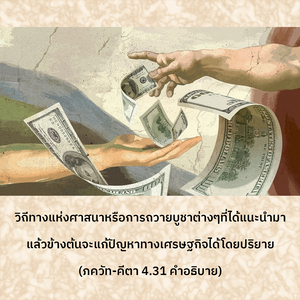
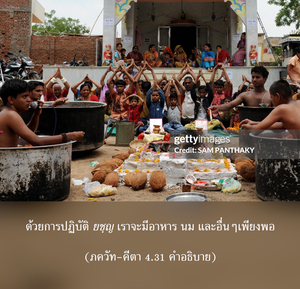

โอ้ ผู้ยอดเยี่ยมแห่งราชวงศ์ กุรุ ปราศจากการถวายบูชาเราจะไม่มีความสุขอยู่บนโลกนี้หรือในชีวิตนี้ แล้วอะไรจะเกิดขึ้นในชาติหน้า




ไม่ว่าเราจะมีชีวิตอยู่ทางวัตถุในรูปลักษณ์ใดก็ตาม เราก็ยังจะอยู่ในอวิชชาเกี่ยวกับสถานภาพอันแท้จริงของเราอย่างถาวร หรืออีกนัยหนึ่ง การมีชีวิตอยู่ในโลกวัตถุก็เนื่องมาจากผลกรรมอันมากมายจากความบาปหลายๆ ชาติของเรา อวิชชา คือ ต้นเหตุของชีวิตบาป และชีวิตบาป คือ ต้นเหตุที่ฉุดให้เราอยู่ต่อในชีวิตทางวัตถุ ชีวิตในร่างมนุษย์เป็นหนทางเดียวที่อาจจะออกไปจากพันธนาการเช่นนี้ได้ ฉะนั้น คัมภีร์พระเวทจึงเปิดโอกาสให้เราหลบหนีโดยการชี้วิถีทางแห่งศาสนา ความสะดวกทางเศรษฐกิจ การประมาณการสนองประสาทสัมผัส และในที่สุดวิถีทางที่จะออกจากสภาวะแห่งความทุกข์ทั้งหมด วิถีทางแห่งศาสนา หรือการถวายบูชาต่างๆ ที่ได้แนะนำมาแล้วข้างต้นจะแก้ปัญหาทางเศรษฐกิจได้โดยปริยาย ด้วยการปฏิบัติ ยชฺญ เราจะมีอาหาร นม และอื่นๆ เพียงพอ แม้จะมีประชากรเพิ่มมากขึ้นเมื่อร่างกายได้รับอาหารเพียงพอโดยธรรมชาติขั้นต่อไปจะสนองประสาทสัมผัส ดังนั้น คัมภีร์พระเวทจึงแนะนำพิธีสมรสอันศักดิ์สิทธิ์เพื่อประมาณการสนองประสาทสัมผัส จากนั้นเราจะค่อยๆ พัฒนามาถึงระดับที่ปล่อยวางจากพันธนาการทางวัตถุ และความสมบูรณ์สูงสุดแห่งชีวิต อิสรภาพนั้นคือการมาคบหาสมาคมกับองค์ภควานฺ ความสมบูรณ์บรรลุได้ด้วยการปฏิบัติ ยชฺญ (การถวายบูชา) ดังที่ได้อธิบายมาข้างต้น หากเรายังไม่ชอบการปฏิบัติ ยชฺญ ตามคัมภีร์พระเวท เราก็คาดหวังชีวิตที่มีความสุขแม้ในร่างนี้ไม่ได้ แล้วจะพูดถึงร่างหน้าในชาติหน้าได้อย่างไร มีระดับแห่งความสะดวกสบายทางวัตถุที่แตกต่างกันในโลกสวรรค์ และทั้งหมดมีความสุขอย่างมหาศาลสำหรับผู้ปฏิบัติ ยชฺญ ต่างๆ แต่ความสุขสูงสุดที่มนุษย์สามารถบรรลุได้ คือ ได้รับการส่งเสริมให้ไปถึงโลกทิพย์ด้วยการปฏิบัติกฺฤษฺณจิตสำนึก ดังนั้น ชีวิตของกฺฤษฺณจิตสำนึกคือผลสรุปในการแก้ปัญหาชีวิตทางวัตถุทั้งปวง